- Crédits
- Situation d’accroche
- Définition d’un tableau
- Tableaux en Python
- Accès aux éléments d’un tableau
- Construction d’un tableau
- Opérations sur les tableaux
- Parcours d’un tableau
- Aliasing
- Méthodes de tableau dynamique en Python
Crédits⚓︎
Ce cours est largement inspiré des chapitres 5 et 8 du manuel NSI de la collection Tortue chez Ellipse, auteurs : Ballabonski, Conchon, Filliatre, N’Guyen. Le prepabac Première NSI de Guillaume Connan chez Hatier a également été consulté.
Situation d’accroche⚓︎
Exercice 1
- Écrire une fonction
moyenne3notes(a, b, c)qui renvoie la moyenne arithmétique d'une série de 3 notesa, b, c. - Proposer une fonction
moyenne(n)qui prend en paramètres un nombre de notes et retourne la moyenne de ces notes saisies par l'utilisateur. - Quel(s) mécanisme(s) pourrai(en)t nous permettre d'écrire une fonction qui calcule la moyenne d'une série de notes sans interaction avec l'utilisateur du programme ?
Définition d’un tableau⚓︎
Définition 1
- Un objet est un conteneur s'il peut conteneur plusieurs objets.
- Un conteneur est une séquence s'il contient une collection ordonnée d'objets qui sont accessibles par leur index dans la séquence.
- Un tableau est une structure de données qui est un conteneur et une séquence. Il permet de stocker plusieurs éléments dans une seule variable et d'y accéder par leur index.

Tableaux en Python⚓︎
Point de cours 1
- En [Python][Python], les tableaux sont implémentés dans le type
listet on les nomme souvent listes même si les listes désignent en général une autre structure de données. Le typelistest suffisamment flexible pour représenter la structure de données tableau et d'autres comme les listes, piles, files ... Dans la suite de ce cours, on désigne par tableaux, les objets de typelistdu langage [Python][Python]. Dans les exercices, comme dans les QCM d'E3C, on rencontrera parfois l'appellation Python liste pour désigner la structure de données tableau - Un tableau [Python][Python] est une expression délimitée par des crochets et les éléments dans l'ordre croissant des index de gauche à droite sont séparés par le symbole virgule
,:>>> t = [4, 20, 10] # on affecte le tableau [4, 20, 10] à t >>> len(t) 3 >>> t[0] 4 >>> t[len(t)-1] 10 >>> t[3] Traceback (most recent call last): File "<stdin>", line 1, in <module> IndexError: list index out of range >>> t[0] = 6 >>> t [6, 20, 10] - La séquence de valeurs contenue dans un tableau est indexée à partir de 0.
- Le nombre d'éléments d'un tableau affecté à une variable
test donné par la fonctionlenaveclen(t). Un tableau vide est noté[]. - On accède à l'élément d'index
kavec la syntaxet[k]. - On peut manipuler l'élément d'index
kcomme une variable et modifier sa valeur par une affectation avec la syntaxet[k] = valeur. - On peut considérer que l'accès et la modification d'un élément à partir de son index se fait en temps constant, car les éléments sont stockés de façon contigue en mémoire et l'index donne le nombre de décalages depuis le premier élément.
- Un tableau est itérable, c'est-à-dire qu'on peut parcourir ses éléments avec une boucle
for:
>>> for e in t: ... print(e) ... 4 20 10 - En [Python][Python], les tableaux peuvent contenir des éléments de types hétérogènes mais nous manipulerons principalement des tableaux homogènes (types
int, float, string,bool). - En [Python][Python], les tableaux sont dynamiques, leur taille peut varier.
Accès aux éléments d’un tableau⚓︎
Méthode 1
- Dans un tableau
tab, chaque élément de la séquence ordonnée est repéré par son indexkqui permet d'accéder à l'élément avec l'expressiontab[k]ou de le modifier avec l'instructiontab[k] = valeur. - [Python][Python] permet également d'extraire un sous-tableau d'un tableau
tabavec l'expressiontab[debut:fin]qui représente la sous-séquence defin - debutéléments, entre l'élément d'indexdebutinclus et l'élément d'indexfinexclu, comme pourrange(debut, fin). Ce mécanisme de découpage en tranches est désigné par le terme de slicing. - [Python][Python] permet de repérer les éléments avec des index négatifs représentant le décalage par rapport à la la fin de la séquence, mais nous ne les utiliserons pas car ils sont source d'erreurs.
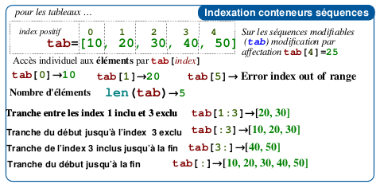
\Figure modifiée à partir d'une source de Louis Leskow inspirée d'un memento de Laurent Pointal
- On peut tester l'appartenance d'un élément à un tableau avec l'opérateur
inet sa négationnot in. Cette opération s'effectue en moyenne en coût proportionnel à la taille du tableau.
>>> t = list(range(6))
>>> t
[0, 1, 2, 3, 4, 5]
>>> 4 in t
True
>>> 6 in t
False
>>> 6 not in t
True
Exercice 2
- Soit la liste suivante :
liste_pays = ["France","Allemagne","Italie","Belgique"].
Que renvoie : liste_pays[2] ?
- Quelle est la valeur référencée par le tableau L après exécution du programme ci-dessous ?
L = [731, 732, 734]
L[0], L[1] = L[1], L[0]
M = L
M[1] = 732
-
On définit :
L = [10,9,8,7,6,5,4,3,2,1]. Quelle est la valeur deL[L[3]]? -
Réponse 1 : 3 Réponse 2 : 4
-
Réponse 3 : 7 Réponse 4 : 8
-
Écrire une fonction
recherche(tab, element)qui prend en paramètre un tableau et un élément et qui retourneTruesielementest danstabetFalsesinon.
Construction d’un tableau⚓︎
Méthode 2
Il existe plusieurs façons de définir un tableau en [Python][Python].
- On peut le définir en extension en énumérant toute la séquence :
>>> t1 = [8, 10, 11,14]
>>> t2 = [False, True, False]
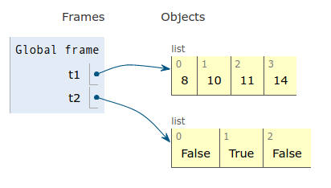
\- On peut convertir en tableau un autre objet itérable (qui peut se parcourir avec une boucle
for) avec le constructeurlist.>>> t11 = list(range(5)) >>> t11 [0, 1, 2, 3, 4] >>> t12 = list('alphabet') >>> t12 ['a', 'l', 'p', 'h', 'a', 'b', 'e', 't'] >>> list(4) Traceback (most recent call last): File "<stdin>", line 1, in <module> TypeError: 'int' object is not iterable - On peut le définir en compréhension en générant ses éléments par une boucle
forsur un itérable ( générateur d'entiersrange, autre tableau ...) combinée éventuellement avec un filtrage par une instruction conditionnelle :>>> t3 = [k ** 2 for k in range(6)] #carrés des entiers entre 0 et 5 >>> t3 [0, 1, 4, 9, 16, 25] >>> t4 = [k for k in range(len(t2)) if t2[k]] # index des éléments de t2 de valeur True >>> t4 [1]
Exercice 3
-
Auteur : Germain Becker, question n°326 Genumsi.
Quel est le tableau
tconstruit par les instructions suivantes ?tab = [1, 2, -3, 7, 4, 10, -1, 0] t = [e for e in tab if e >= 0]- Réponse 1 :
t = [1, 2, 7, 4, 10, 0] - Réponse 2 :
t = [e, e, e, e, e, e] - Réponse 3 :
t = [1, 2, 7, 4, 10] - Réponse 4 :
t = [-3, -1, 0]
- Réponse 1 :
-
Quel est le résultat de l'évaluation de l'expression Python suivante ? Auteur : Eric Rougier
[2 ** n for n in range(4)]Réponses :
- Réponse 1 :
[0, 2, 4, 6, 8] - Réponse 2 :
[1, 2, 4, 8] - Réponse 3 :
[0, 1, 4, 9] - Réponse 4 :
[1, 2, 4, 8, 16]
- Réponse 1 :
-
Qu'affiche le programme [Python][Python] ci-dessous ?
L=[0,1,2] M=[3,4,5] N=[L[i]+M[i] for i in range(len(L))] print(N) -
On exécute le script suivant :
L = [12,0,8,7,3,1,5,3,8] a = [elt for elt in L if elt < 4]Quelle est la valeur de
aà la fin de son exécution ?- Réponse 1 :
[12,0,8]Réponse 2 :[12,0,8,7] - Réponse 3 :
[0,3,1,3]Réponse 4 :[0,3,1]
- Réponse 1 :
Opérations sur les tableaux⚓︎
Méthode 3
- On peut concaténer deux tableaux avec l'opérateur
+, un nouveau tableau est renvoyé.>>> t1 = [1,2] >>> t2 = [3,4] >>> t3 = t1 + t2 >>> t3 [1, 2, 3, 4] - L'opérateur
*permet d'itérer une concaténation et d'initialiser un tableau de taille quelconque avec une valeur par défaut. Attention, c'est le même élément qui est dupliqué !>>> t0 = [0] * 4 #un tableau de taille 4 initialisé à 0 >>> t0 [0, 0, 0, 0] >>> tv = [True] * 6 #un tableau de taille 6 initialisé à True >>> tv [True, True, True, True, True, True] >>> from random import randint >>> t1 = [randint(1, 6) for _ in range(5)] #5 lancers de dé à 6 faces >>> t1 [5, 2, 2, 5, 6] >>> t2 = [randint(1, 6)] * 5 #5 lancers de dé à 6 faces ? >>> t2 #non 5 fois le même lancer [5, 5, 5, 5, 5]
Exercice 4
-
On exécute le script suivant :
a = [1, 2, 3] b = [4, 5, 6] c = a + bQue contient la variable
cà la fin de cette exécution ?Réponses :
-
Réponse 1 :
[5,7,9]Réponse 2 :[1,4,2,5,3,6] -
Réponse 3 :
[1,2,3,4,5,6]Réponse 4 :[1,2,3,5,7,9]
-
-
Soit la fonction
mystereci-dessous.Quelle est la valeur retournée par
mystere([831, 832, 833, 841, 842, 843])?def mystere(u): v = [] n = len(u) for k in range(n): v = [u[k]]+v return v
Parcours d’un tableau⚓︎
Méthode 4
Il existe deux façons de parcourir un tableau en [Python][Python] :
- Le parcours par élément, puisqu'un tableau de type
listest itérable en [Python][Python] :
>>> t6 = [3, 1, 4]
>>> for e in t6:
... print("valeur : ", e)
...
valeur : 3
valeur : 1
valeur : 4
- Le parcours par index, permet de récupérer les indexs des éléments en plus de leurs valeurs :
>>> for k in range(len(t6)):
... print("valeur : ", t6[k], " index :", k)
...
valeur : 3 index : 0
valeur : 1 index : 1
valeur : 4 index : 2
Exercice 5
- Écrire une fonction
occurences(v, t)qui retourne le nombre d'occurences de la valeurvdans le tableaut. -
Auteur : Nicolas Réveret, question n°379 Genumsi
On a saisi le code suivant :
liste = [0, 1, 2, 3] compteur = 0 for i in range(len(liste)-1) : for j in range(i,len(liste)) : compteur += 1Que contient la variable compteur à la fin de l’exécution de ce script ?
-
Revenons sur notre situation d'accroche.
-
Écrire une fonction
somme(tab)qui retourne la somme des éléments d'un tableau de nombrestab. -
Écrire une fonction
moyenne_arithmetique(tab)qui retourne la moyenne arithmétique des éléments d'un tableau de nombrestab. -
En voulant programmer une fonction qui calcule la valeur minimale d'un tableau d'entiers, on a écrit :
def minimum(L): mini = 0 for e in L: if e < mini: mini = e return miniCette fonction a été mal programmée. Pour quel tableau ne donnera-t-elle pas le résultat attendu, c'est-à-dire son minimum ?
Réponses :
- Réponse 1 :
[-1,-8,12,2,23] - Réponse 2:
[0,18,12,2,3] - Réponse 3:
[-1,-1,12,12,23] - Réponse 4:
[1,8,12,2,23]
- Réponse 1 :
-
Écrire une fonction
max_tab(tab)qui retourne le maximum d'un tableau de nombres passé en paramètre.
Aliasing⚓︎
Aliasing et copie de tableau⚓︎
Point de cours 2
- Pour les tableaux (type
list), comme pour les autres types construits, le mécanisme de l'affectation de variable en [Python] diffère de celui des types base :int, float, bool). Lors de l'affectationtab = [6, 3, 1], la variabletabne reçoit pas comme valeur les éléments du tableau mais une référence vers la zone mémoire où ils sont effectivement stockés. Ce mécanisme est désigné par le terme d'aliasing. -
Illustrons ces différences en déroulant une séquence d'affectations avec [Python-tutor][Python-tutor], où l'on copie par affectation une variable de type
intpuis une variable de typelist. -
Étape 1 : Si
aest de type de base (iciint), l'affectationb = aassigne à la variablebune copie de la valeur de la variablea(ici 50.)
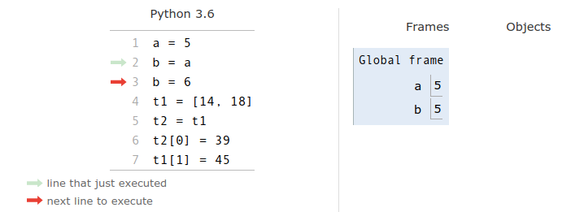
\- Étape 2 : Si on modifie la valeur de
b, la variablean'est pas touchée, les deux variables sont indépendantes.
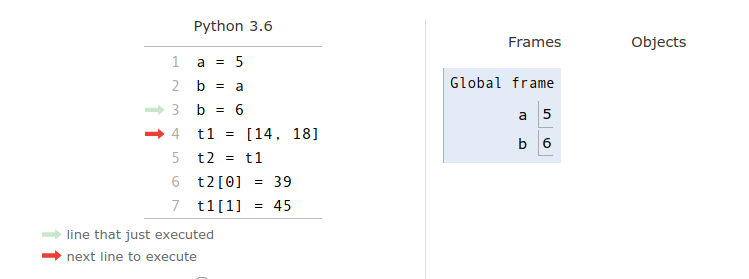
\- Étape 3 : Si on affecte le tableau
[14, 18]à la variablet1, celle-ci ne prend pas pour valeur directement la séquence d'éléments du tableau mais une référence vers cette séquence.
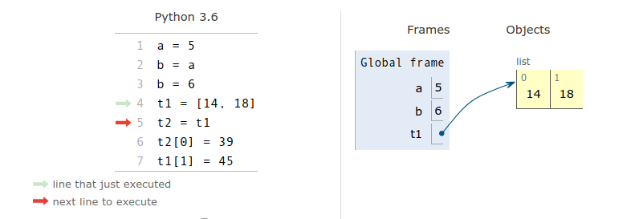
\-
Étape 4 : Si
t1est de type construit (icilist), l'affectationt2 = t1assigne à la variablet2une copie de la valeur de la variablet1comme pour les types de base, sauf que la valeur det1est une référence. On dit quet1ett2partagent la même référence.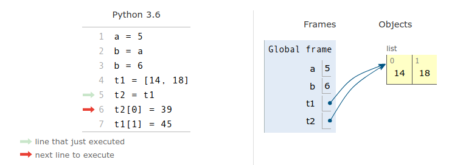
\ -
Étape 5 : Comme
t1ett2partagent la même référence, toute modification det1touchet2et vice-versa. On parle d'effet de bord. Attention, il faut bien comprendre ce mécanisme pour éviter les effets de bord indésirables !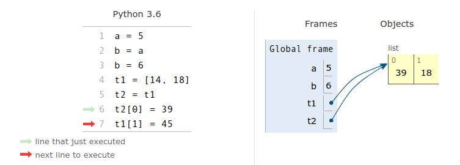
\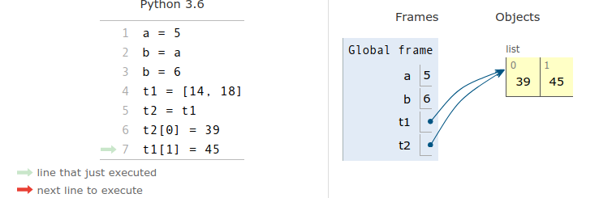
\ -
On peut réaliser une copie superficielle (ou shallow copy) d'un tableau ou d'une variable de type construit avec le mécanisme de slicing. Noys y reviendrons plus tard, pour les structures imbriquées (tableaux de tableaux), il faudra copier récursivement les valeurs correspondant à toutes les références avec une copie profonde. Le module
copypropose une fonctioncopypour la copy superficielle et une fonctiondeepcopypour la copie profonde.
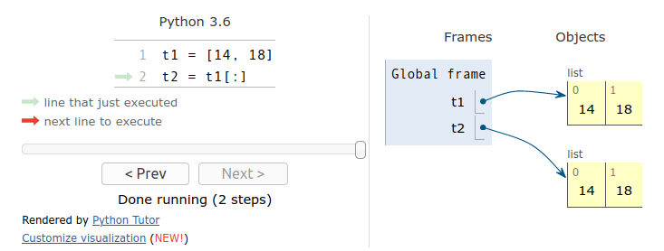
\Exercice 6
- Écrire une fonction
copie(tab)qui retourne une copie superficielle du tableautabsans utiliser de slicing. -
Auteur : Nicolas Revéret
On considère le code suivant :
def f(tab): for i in range(len(tab)//2): tab[i],tab[-i-1] = tab[-i-1],tab[i]Après les lignes suivantes :
tab = [2,3,4,5,7,8] f(tab)Quelle est la valeur de la variable
tab?Réponses :
- Réponse 1
[2,3,4,5,7,8]Réponse 2[5,7,8,2,3,4] - Réponse 3
[8,7,5,4,3,2]Réponse 4[4,3,2,8,7,5]
- Réponse 1
Aliasing et passage de tableau en paramètre d’une fonction⚓︎
Méthode 5
En [Python][Python], lorsqu'on appelle une fonction avec des paramètres effectifs, les paramètres formels apparaissant dans la signature de la fonction, deviennent des variables locales à la fonction et reçoivent comme valeurs des copies des valeurs des paramètres effectifs. Les types construits, comme les tableaux de type list, ayant pour valeur une référence, le paramètre formel va partager la même référence et on va retrouver les mêmes effets de bord que dans la copie de tableau par affectation.
- Étape 1 : On définit une variable globale
ade typeint, une variablet1de typelist(un tableau), une fonctionincremente(x)qui incrémente la valeur du paramètrexde typeintet une fonctionincremente_tab(tab)qui incrémente tous les éléments du paramètretabde typelist.
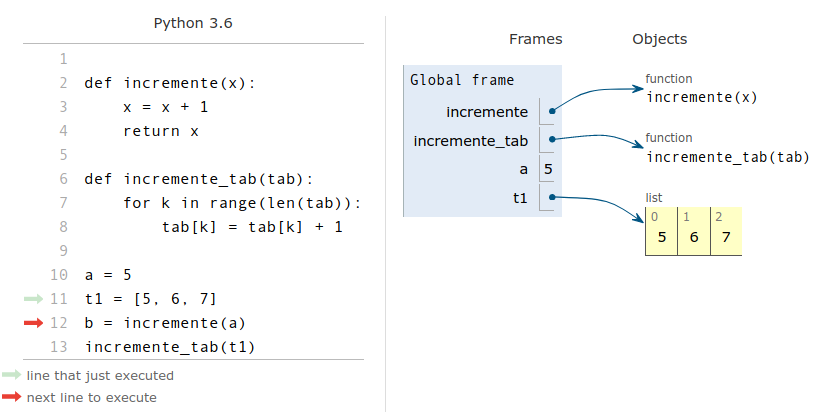
\- Étape 2 : On appelle
incremente(a)et on affecte la valeur retournée à une variableb. Lors de l'appel, le paramètre formelxprend pour valeur une copie de la valeur du paramètre effectifa. La fonction retourne la valeur 6 après incrémentation de la variablex, les variables globaleaet localexsont indépendantes.xdisparaît dès que l'appel de fonction se termine.
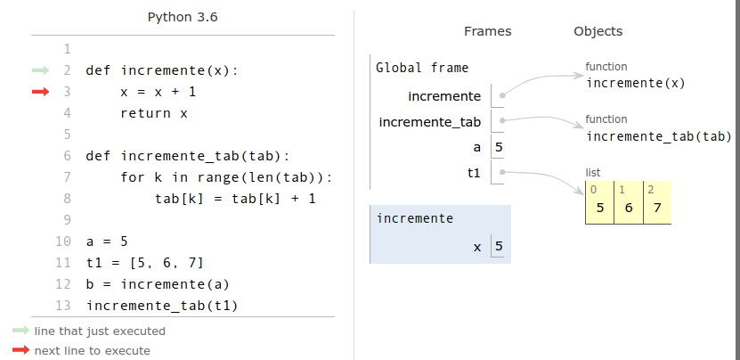
\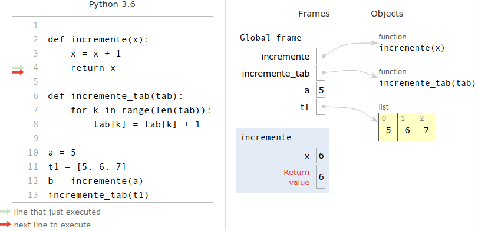
\- Étape 3 : La variable globale
ba été affectée avec 6 la valeur retournée parincremente(a). La variablean'a pas été modifiée par effet de bord,. Lors de l'appelincremente_tab(t1), le paramètre formeltabest affecté avec une copie de la valeur du paramètre effectift1. Ce dernier n'est pas de type de base commea, mais de type construitlistdonc sa valeur est un référence.
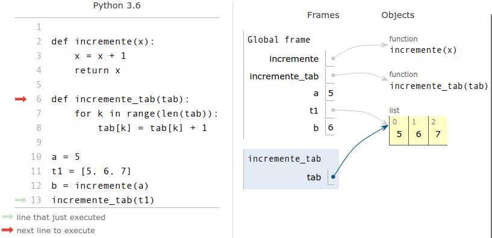
\- Étape 4 : La variable locale
tabet la variable globalet1partagent une même référence : la fonctionincremente_tabpeut modifier le tableau référencé . La fonctionincremente_tabrenvoieNonemême si elle ne contient pas d'instructionreturn. Après l'appel de fonction, la variable globalet1a été modifiée par par effet de bord. Une fonction qui modifie l'état de la mémoire du programme principale, sans renvoyer de valeur, s'appelle une procédure.
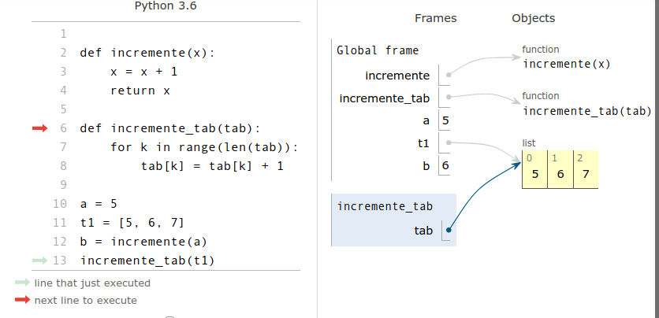
\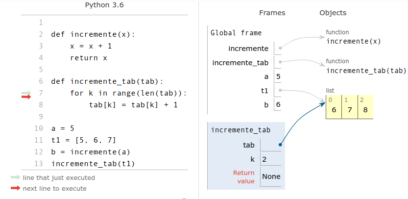
\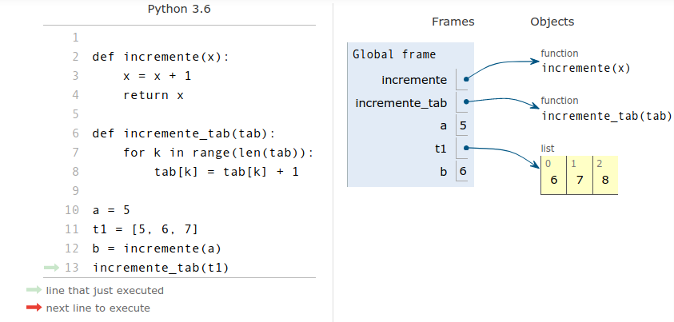
\Exercice 7
-
On veut écrire une procédure
echange(tab, i, j)qui échange les éléments d'indexietjd'un tableautab. On fournit le modèle ci-dessous :def echange(tab, i, j): assert 0 <= i < len(tab) and 0 <= j < len(tab), "message d'erreur" # à compléter- Remplacer le message d'erreur de l'assertion par un message pertinent.
- Compléter la fonction.
-
Écrire une procédure
permutation_circulaire(tab)qui modifie la position des éléments du tableautabpar permutation circulaire de gauche à droite :
>>> t = list(range(6)) >>> t [0, 1, 2, 3, 4, 5] >>> permutation_circulaire(t) >>> t [5, 0, 1, 2, 3, 4] >>> permutation_circulaire(t) >>> t [4, 5, 0, 1, 2, 3]
Méthodes de tableau dynamique en Python⚓︎
Méthode 6
Les tableaux [Python][Python] sont dynamiques c'est-à-dire que leur taille peut évoluer. Pour un tableau tab, les fonctions permettant d'ajouter ou enlever des éléments sont des méthodes de l'objet tab qui s'utilisent avec la notation pointée tab.methode(parametres). Un tableau étant de type list il est équivalent d'écrire list.methode(tab, parametres).
>>> t = [] #tableau vide
>>> t.append(8) #ajout de l'élément 8 à la fin de t
>>> t
[8]
>>> list.append(t, 7) #ajout de l'élément 7 à la fin de t
>>> t
[8, 7]
- On peut ajouter un élément à la fin d'un tableau avec la méthode
append. On peut ainsi peupler un tableau initialement vide.>>> t5 = [] >>> for k in range(3): ... t5 .append(k ** 2) ... >>> t5 [0, 1, 4] - On peut insérer un élément avec la méthode
insertqui prend en paramètre l'index de l'élément une fois inséré. Les éléments à sa droite étant tous décalés vers la droite, l'insertion peut représenter un coût proportionnel à la taille du tableau si elle se fait au début du tableau.>>> t = ['a', 'c', 'd'] >>> t.insert(1, 'b') >>> t ['a', 'b', 'c', 'd'] -
On peut extraire un élément de deux façons :
-
À partir de son index, avec la méthode
pop, qui prend pour paramètre l'index de l'élément extrait, le dernier par défaut. Tous les éléments à droite de l'élément extrait doivent être décalés vers la gauche, ce qui peut représenter un coût proportionnel à la taille du tableau si l'extraction se fait au début du tableau.>>> carac = [chr(k) for k in range(ord('a'), ord('g'))] >>> carac ['a', 'b', 'c', 'd', 'e', 'f'] >>> carac.pop() 'f' >>> carac ['a', 'b', 'c', 'd', 'e'] >>> carac.pop(0) 'a' >>> carac ['b', 'c', 'd', 'e'] - À partir de sa valeur avec la méthode
remove, la première occurence trouvée de l'élément passée en paramètre est supprimée. Encore une fois, le coût peut être proportionnel à la taille du tableau si la suppression se fait au début.>>> t = [0,1,0,1] >>> t = [0,2,0,2] >>> t.remove(2) >>> t [0, 0, 2] >>> t.remove(1) Traceback (most recent call last): File "<stdin>", line 1, in <module> ValueError: list.remove(x): x not in list - On peut compter le nombre d'occurences d'un élément dans un tableau avec la méthode
count.>>> t = [randint(1, 6) for _ in range(1_000_000)] #10**6 lancers de dés >>> t.count(6) #nombre de 6, cohérent non ? 166821
Exercice 8
- Écrire une fonction fonction
filtre_notes(tab)qui extrait toutes les notes inférieures à 10 d'un tableau de notes entre 0 et 20 et les renvoie dans un autre tableau. - Écrire une fonction renvoyant le maximum d'un tableau passé en paramètre et le tableau des positions où ce maximum est atteint.
-
On définit en Python la fonction suivante :
def f(L): S = [] for i in range(len(L)-1): S.append(L[i] + L[i+1]) return SQuel est le tableau renvoyé par
f([1, 2, 3, 4, 5, 6])?- Réponse 1
[3, 5, 7, 9, 11, 13] - Réponse 2
[1, 3, 5, 7, 9, 11] - Réponse 3
[3, 5, 7, 9, 11] - Réponse 4 cet appel de fonction déclenche un message d'erreur
- Réponse 1